CSC 589 AU / Homework 4 / Image Blending Using Pyramids
Courtesy of Wikipedia.
For Homework 4, I was tasked to display and create the Laplacian and gaussian pyramids. What are these pyramids, and why should we even care about them? Simply put, people are able to properly understand certain parts of an image. Pixels are great for spatial resolution, but it tells us very little information about the frequency. However, Fourier transforms, on the other hand, are great for frequency access but not for spatial info. Pyramids are the balance between frequency and spatial information.
We find these pyramids by subsampling the image by a rate of 2, a generally accepted and used rate, up or down. However, before we do this, we would blur the image and then subsample, to avoid aliasing. This tosses away a lot of the high frequencies that the images would keep as we subsample. Please see the image to the right to get a better idea of how it works.
But why is this interesting in the first place? Well, that's a fair question! Using these pyramids and with a particular formula related to the Laplacian pyramids of two images and the gaussian pyramid of a given mask, we can create more realistic and more interesting ways of blending images together. Hence, we have arrived at the idea of masking. Take a look at the images at the bottom.
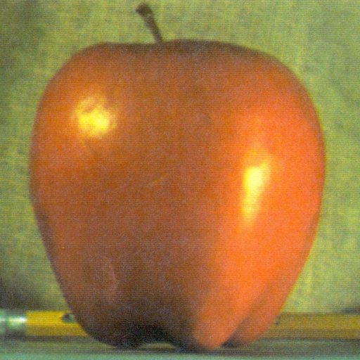
 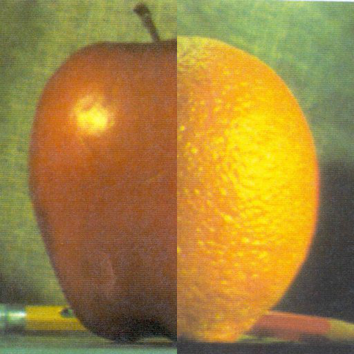
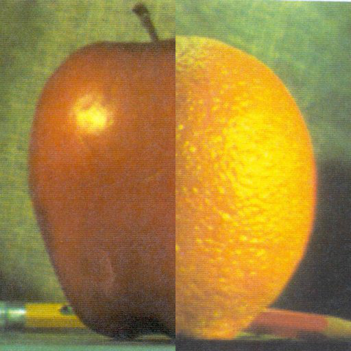
|
This is a very amateur way of blending two images together: taking the half of one image and the half of another and putting them together. As you can see, it's easy to fall out of the illusion that this is a strange hybrid of an apple and an orange when you can clearly see the line in the middle. The method that will be discussed will resolve this. To see the code related to this project, direct yourself to the Github repository.
To begin, let's talk about the functions and the algorithms associated with the functions.
Interpolation
Interpolation, as it is explained in the code, enlarges the image with an upsampling rate of r = 2. The image's width and length are doubled, which means that the area is quadrupled. This will primarily be used in the creation of the Laplacian pyramids, which rely on gaussian pyramids. This is further explained in the section below that discusses the construction of pyramids in depth.
def interpolate(image):
"""
interpolates an image with upsampling rate, r = 2
"""
image_up = np.zeros((2*image.shape[0], 2*image.shape[1]))
# upsample
image_up[::2, ::2] = image[:,:]
# blur (we need to scale this up since kernel has unit area)
# the length and width are doubled, so the area is quadrupled
return (4 * (ndimage.filters.convolve(image_up, kernel, mode='constant')))Decimation
As it is explained in the decimate function, decimation reduces the
image by a downsampling rate of 2. This will primarily be used by the function that creates
the gaussian pyramid.
def decimate(image):
"""
decimates an image with downsampling rate, r = 2
"""
# downsample
image_blur = ndimage.filters.convolve(image, kernel, mode='constant')
return image_blur[::2, ::2]
Construction of Pyramids
In order to construct pyramids, we need a filter--for this homework assignment, we are using the filter that was provided by Professor Xiao, a binomial 5-tap filter. Refer to the code for more information.
To build the gaussian pyramid, we blur and then subsample the image before decimating the image by about 1/2. As stated previously, the Laplacian pyramid is reliant on the gaussian pyramids. In order to find the levels of the Laplacian pyramid, we find the difference that is formed between that specific level in the gaussian pyramid and expanded version of its upper level in that pyramid. This refers this line in the code:
LaplacianPyramid.append(GaussianPyramid[i] - interpolate(GaussianPyramid[i + 1]))The full function appears like this, which finds both the Laplacian and gaussian pyramids and returns the results:
def pyramids(image):
"""
constructs Gaussian and Laplacian pyrmaids
parameters:
image: the original image (the base of the pyrmaid)
returns:
GaussianPyramid: the gaussian pyrmaid
LaplacianPyramid: the Laplacian pyrmaid
"""
GaussianPyramid = [image, ]
LaplacianPyramid = []
# build the gaussian pyrmaid
while image.shape[0] >= 2 and image.shape[1] >= 2:
image = decimate(image)
GaussianPyramid.append(image)
# build the Laplacian pyramid
for i in range(len(GaussianPyramid)-1):
# Laplacian pyramids are found using the lvl of one gaussian level and
# the level of the next one
LaplacianPyramid.append(GaussianPyramid[i] - interpolate(GaussianPyramid[i + 1]))
return GaussianPyramid[:-1], LaplacianPyramidThe Pyramids
In this section, we will now discuss the pyramids themselves. In the discussion of the gaussian and Laplacian pyramids, it is easier to see the effects of these items in grayscale rather than in color, as it is easier to note the details in each. I've increased the brightness of the Laplacian pyramids in order to better see the details by about 30% for the apple image and 60% for the orange image.
The Gausisan Pyramid (left) and the Laplacian Pyramid (right) of the Apple
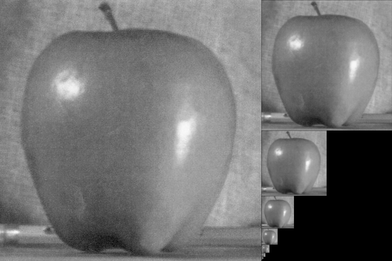 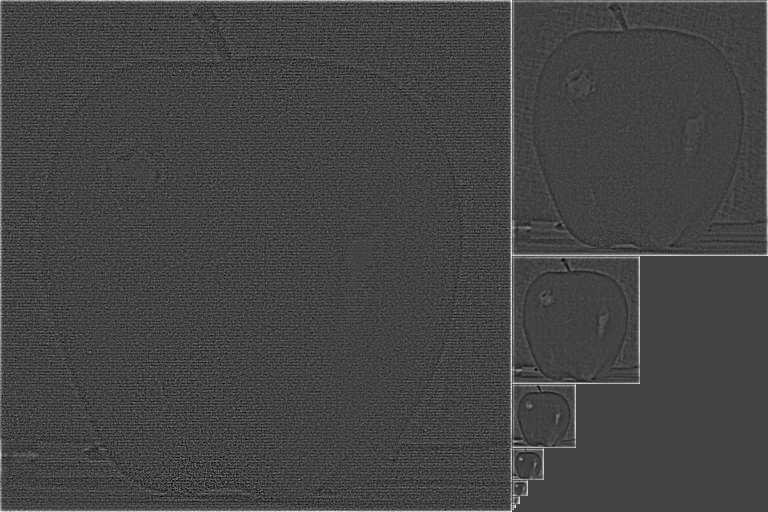The Gausisan Pyramid (left) and the Laplacian Pyramid (right) of the Orange
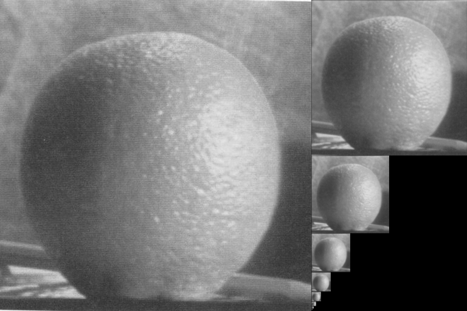 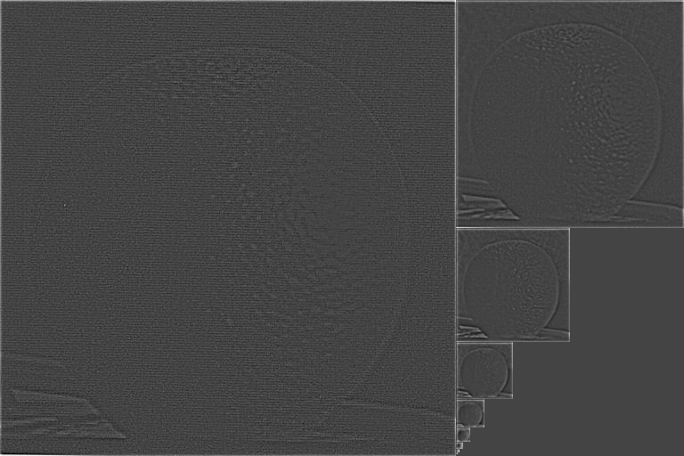
Blending
The following is the blending function. Using the equation that is stated below, we are able to successfully blend the two images in question.
def blending(laplacian_pyramid_1, laplacian_pyramid_2, gauss_pyramid_mask):
"""
LS(i,j) = GR(I,j,)*LA(I,j) + (1-GR(I,j))*LB(I,j)
"""
blend_pyramid = []
for i in range(0, len(laplacian_pyramid_1)):
# first half of the equation
first_half = (gauss_pyramid_mask[i] * laplacian_pyramid_1[i])
# second half of the equation
second_half = ((1-gauss_pyramid_mask[i]) * (laplacian_pyramid_2[i]))
# append the first + second to blend_pyrmaid
blend_pyramid.append(first_half + second_half)
return blend_pyramidResults
Successes
Apples & Oranges
Let's take a look at the apple and the orange image again. Using this method to blend images, we have the following result:
 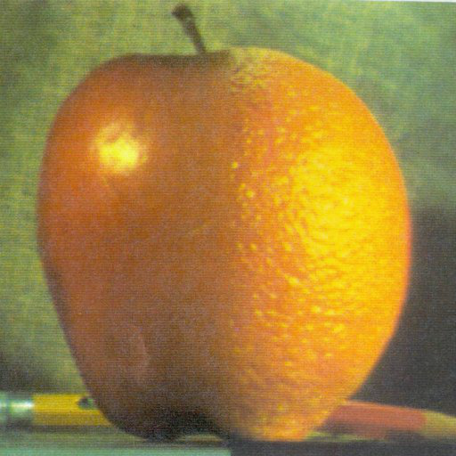
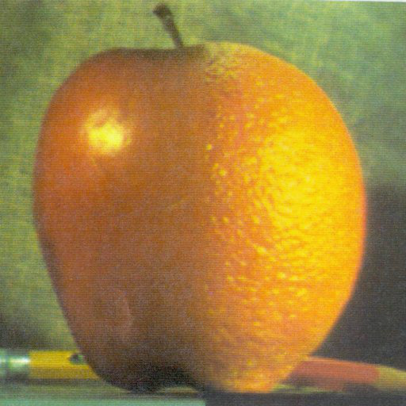
|
This worked out pretty well! You can no longer see / tell where the apple begins and where the orange meets. Because the environment that these images existed in were the same, the blended image is very believable. The mask, obviously, supresses one and takes the 'white' side as what will be masked on the apple image.
Sunflowers & Godfrey Gao
| 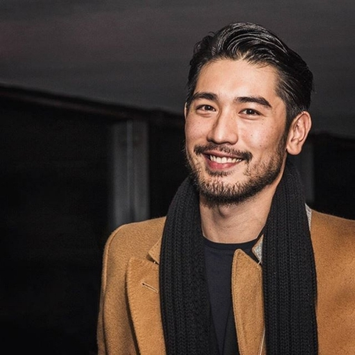 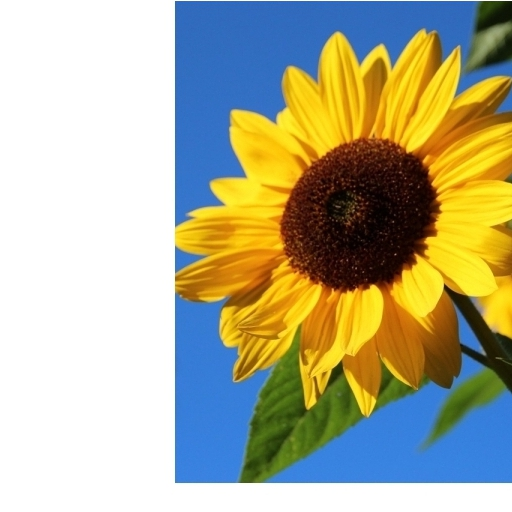 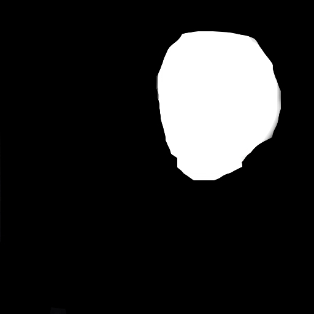 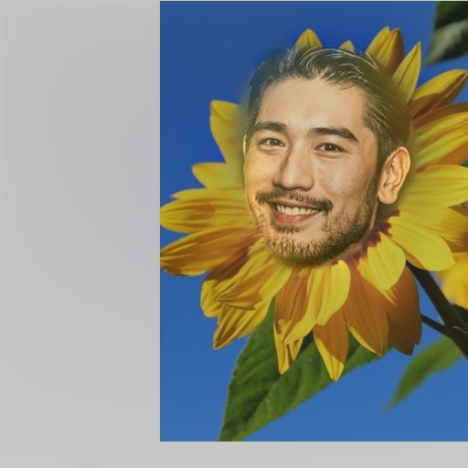 |
Despite some of the shortcomings with this image, I do believe that this is a success. This, as I discuss in the failure section (as I had an iteration before this), required a lot of finessing to work properly. The end result is sweet and cute and showcases my admiration for actor Godfrey Gao. The image at the end of this page shows a cropped version of this blended image. The basis for my mask was Godfrey Gao.
Pandas & Eagles
| 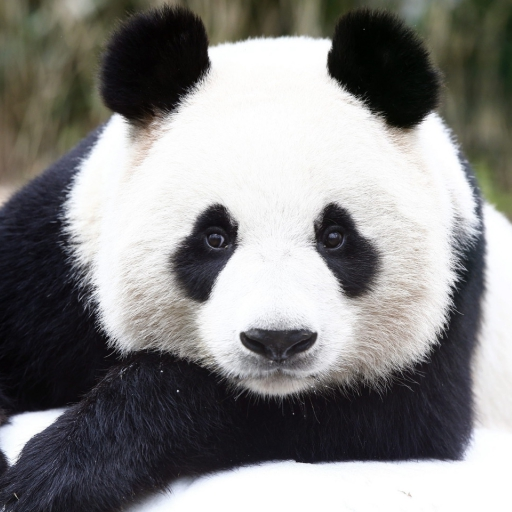 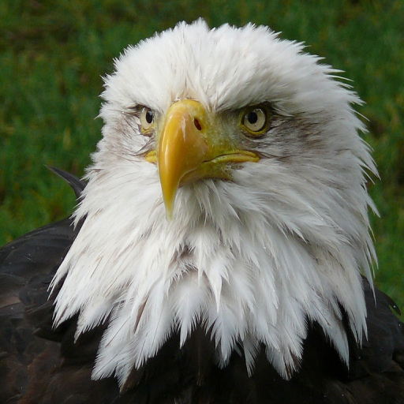 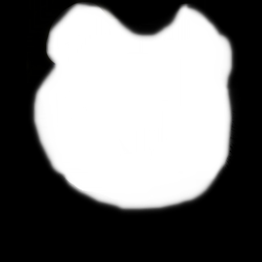 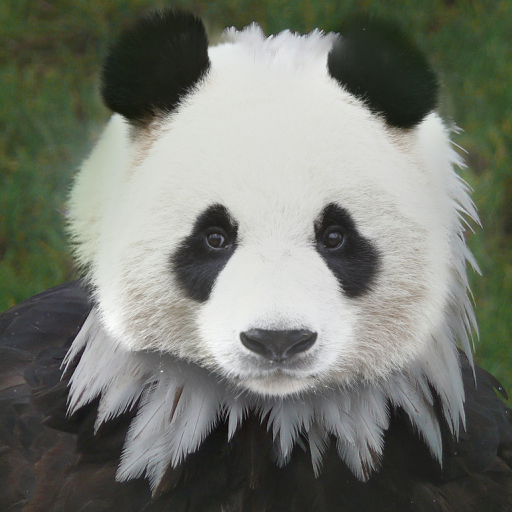 |
This worked surprisingly well! I didn't think it would work the way that it did, but the panda's fluffiness and the eagle's featheriness worked to create an interesting illusion. It runs a bit in the uncanny valley, where you can't quite tell what is so different about the panda. I used the panda as the basis for my mask in this case.
Hands & Eyes & Tongues?
| 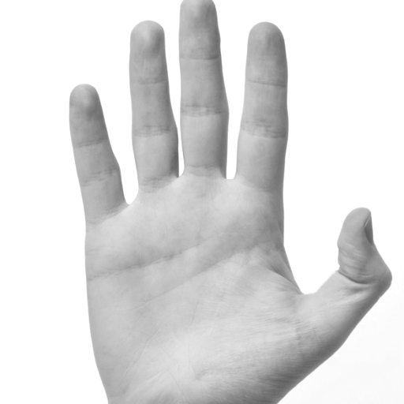 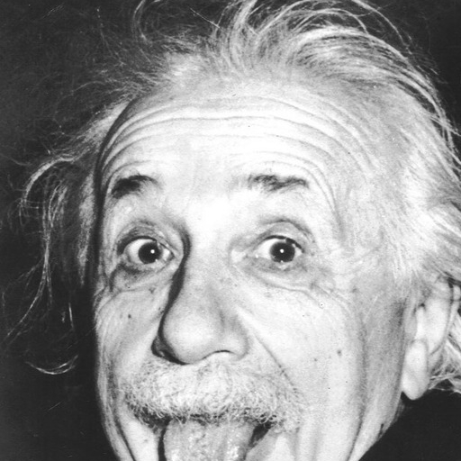 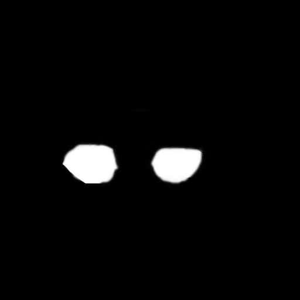 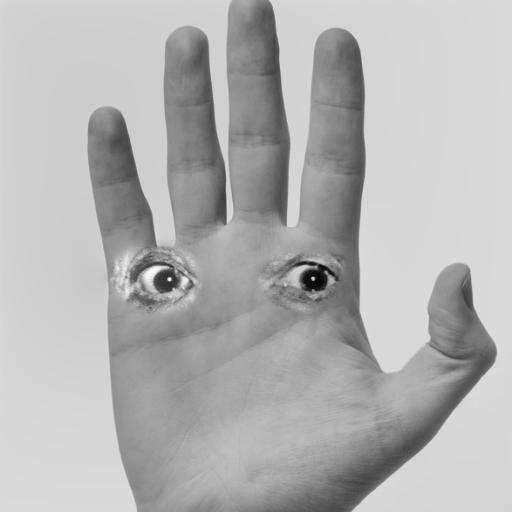 |
| 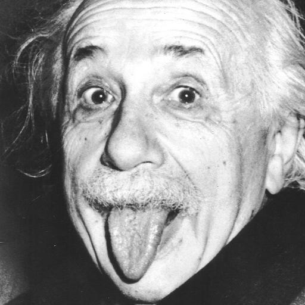 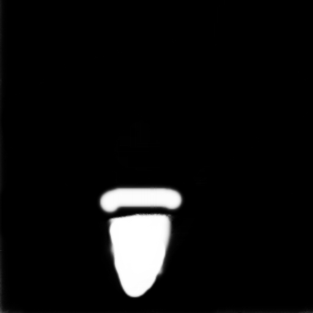 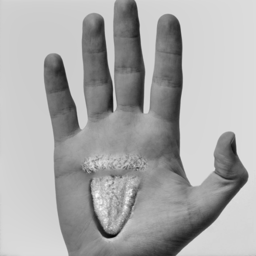 |
To be frank, I have a hard time looking at these without feeling unnerved. However, I wanted to try my hand at a bit of horror and consider both of these iterations successes. I had to crop Einstein's photo a bit to allow for the eyes to be on a lower level to rest somewhat on the inside of the hand. I decided to grayscale the hand image as the Einstein image was on a grayscale level already.
The tongue and mustache was largely for fun and to see what it would look like, but isn't it a bit neat looking?
Failures
Oops, missed.
| 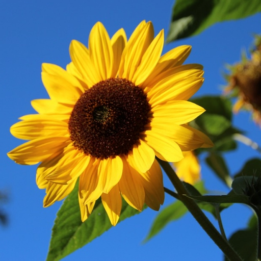 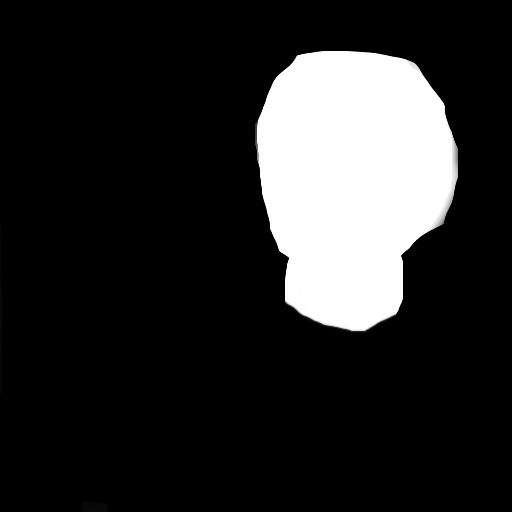 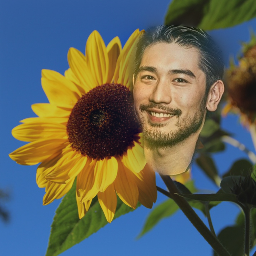 |
Above, there is a successful blending of these two images. However, this was only the case after I had moved the sunflower just enough to allow for Godfrey Gao's head to sit in the middle of the flower. There was a lot of need to readjust in my image editor in order for the mask to properly work.
A bad match.
| 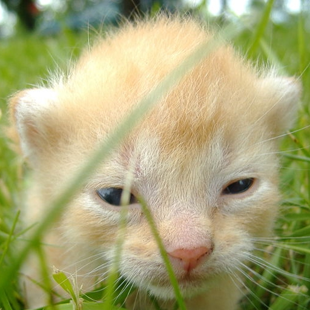 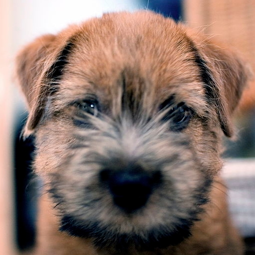 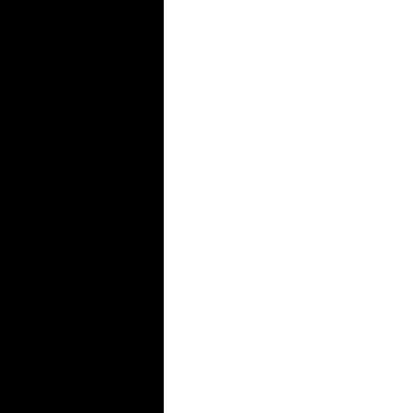 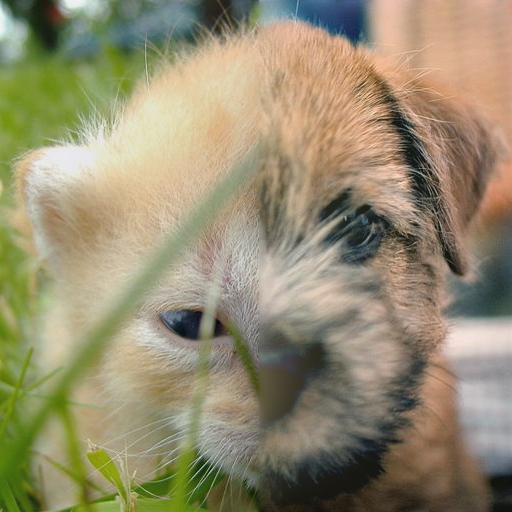 |
This blend of a dog and cat was a failure--with an adjustment of the mask, perhaps it could have been better. Regardless, the features don't line up really well and the grass is a bit offputting.
Fly... Panda?
| 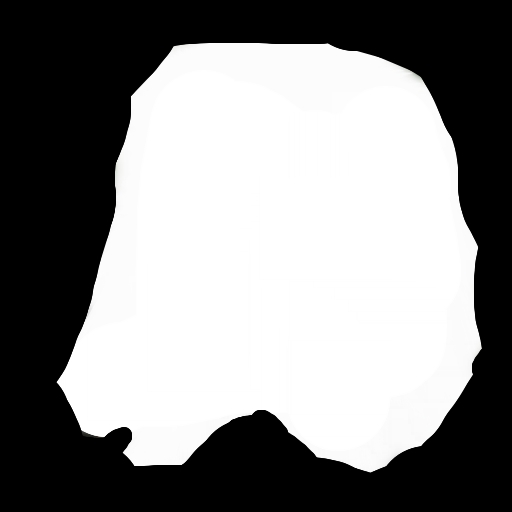 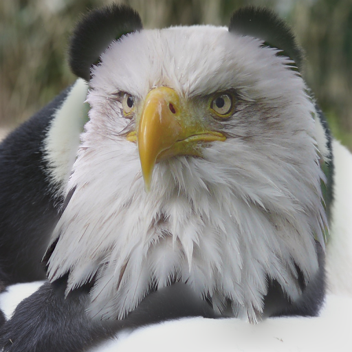 |
This blend is much like the first one, where the match was not very good nor believable.
Thoughts & Conclusions
There is one thing that I would change, and that is making sure that the input images could be of different dimensions that are not strictly 512 px by 512 px. Figuring out that the algorithm that I have implemented didn't allow for different depths. Otherwise, this was a fun project! The algorithms that were discussed in class were straightforward and fairly easy to implement, and the steps to do each part of the project were pretty clear.
Other things to note, I believe this algorithm begins to fail for images that require opacity/transparency of some kind to fully work. It requires a bit of finessing with the mask to properly execute the blend. This algorithm fails in the area of precision or when values are too intense / not quite the same. Images need to be the same size in order for this algorithm to work -- this includes the mask, too.